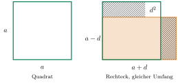
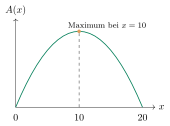

Aufgabe 6.9
Unter allen Rechtecken gleichen Umfangs, welches hat den grössten Inhalt?
Stellen Sie eine Hypothese auf und begründen Sie diese auf mindestens zwei verschiedene Arten.
- Beginnen Sie mit konkreten Beispielen
- Nutzen Sie algebraische, geometrische oder analytische Methoden
- Die dritte binomische Formel kann hilfreich sein
- Denken Sie an Mittelungleichungen
Weg 1: am Quadrat wackeln

Mit Zahlen, wie es in der Sekundarstufe I geht: Ein Quadrat mit $10$ cm Seitenlänge hat $40$ cm Umfang und $100$ cm$^2$ Inhalt. Macht man eine Seite $0.5$ cm kürzer, muss die andere $0.5$ cm länger werden: $9.5\cdot 10.5 = 99.75 < 100$. Für jedes andere $d$ ebenso, denn $(10-d)(10+d) = 100 - d^2$.
Das Bild zeigt, warum: Das Rechteck verliert oben einen Streifen $(a-d)\times d$ und gewinnt rechts einen gleich grossen Streifen $d\times(a-d)$ dazu (beide schraffiert). Was übrig bleibt, ist das kleine Quadrat $d^2$ oben rechts: Um genau so viel ist das Rechteck kleiner.
Weg 2: die Fläche als Funktion

Bei $40$ cm Umfang ist die eine Seite $x$, die andere $20 - x$. Der Inhalt ist \[A(x) = x\,(20 - x) = -x^2 + 20x.\] Das ist eine nach unten geöffnete Parabel mit den Nullstellen $0$ und $20$. Ihr Scheitel liegt aus Symmetriegründen genau in der Mitte, bei $x = 10$. Dann ist auch die andere Seite $10$: Das Rechteck ist ein Quadrat. Für einen beliebigen Umfang $U$ geht es genauso mit $A(x) = x\left(\frac{U}{2} - x\right)$.
Im Video: Etappe 8 · Optimierungsprobleme bei 3:23